Key Takeaways
- Deploy AVD Agent components using Intune – Package and deploy both the Azure Virtual Desktop Agent and AVD Agent Bootloader to Windows devices.
- Enable Remote Help Unattended Support – These components are a key prerequisite for Remote Help on Windows: Unattended Support with Remote Sign-In.
- Simplify deployment with Intune LOB apps – Deploy the required MSI packages using the Line-of-Business (LOB) app method and target the same device groups configured for unattended support.
- No ongoing maintenance required – The AVD Agent and Bootloader automatically update, reducing the need for manual application maintenance.
In this article, I’ll demonstrate how to deploy the Azure Virtual Desktop Agents to Windows devices using Microsoft Intune. These agent components serve as a prerequisite for enabling Remote Help Unattended Support with Remote Sign-In, allowing IT administrators to establish remote support sessions on managed devices without requiring user interaction. The article covers the MSI-based deployment using Intune Line-of-Business (LOB) apps, assignment to targeted device groups, and considerations for maintaining the agent components through their built-in automatic update mechanism.
Table of Content
Download the Azure Virtual Desktop Agents for Windows
As per microsoft documentation, we need to download the Azure Virtual Desktop Agent and Azure Virtual Desktop Agent Bootloader software from the link provided below.
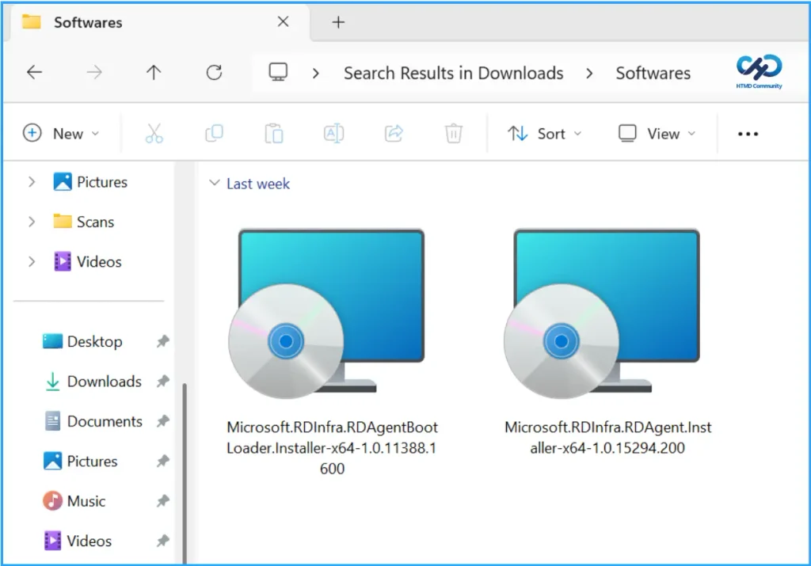
Create Windows Line of Business Apps in Intune
To create Azure Virtual Desktop Agent applications for Windows, sign in to the Microsoft Intune Admin Center using your administrator credentials.
- Navigate to Apps > Platforms > Windows
- Click + Create
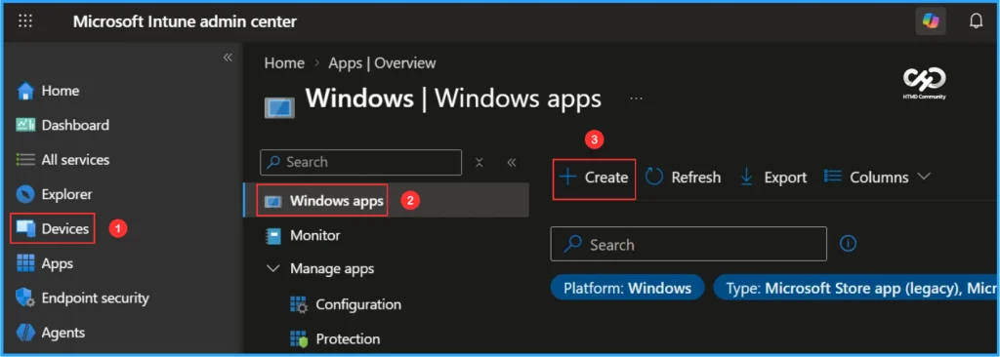
After clicking + Create, a new window will appear prompting you to select the app type. Choose Line-of-business app from the available options.
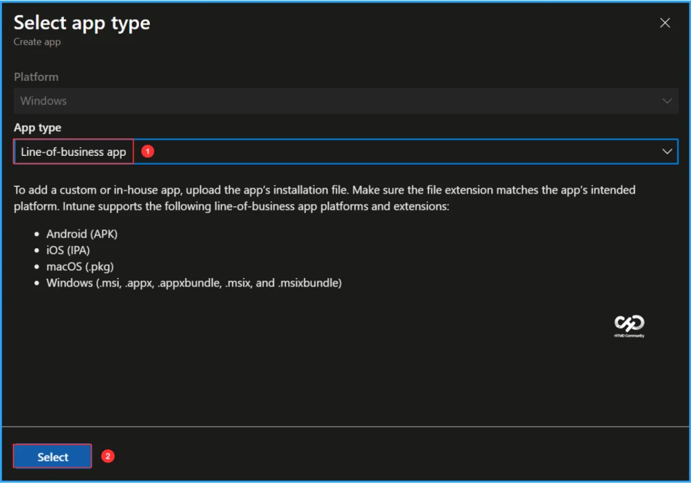
On the App Information page, select the application package file. Click Select app package file, browse to the downloaded MSI file, and choose Microsoft.RDInfra.RDAgent.Installer-x64-1.0.15294.200.msi. Once the package is selected, the application details will be populated automatically. Review the information and click OK to continue.
- Name: Remote Desktop Services Infrastructure Agent
- Platform: Windows
- Size: 26.87 MiB
- MAM Enabled: No
- Execution Context: Per-Machine
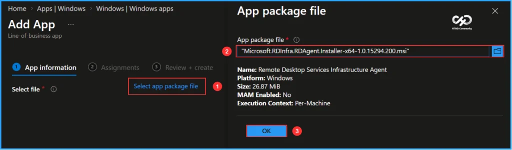
On the App Information page, select the application package file. Click Select app package file, browse to the downloaded MSI file, and choose Microsoft.RDInfra.RDAgentBootLoader.Installer-x64-1.0.11388.1600.msi. Once the package is selected, the application details will be populated automatically. Review the information and click OK to continue.
- Name: Remote Desktop Agent Boot Loader
- Platform: Windows
- Size: 17.13 MiB
- MAM Enabled: No
- Execution Context: Per-Machine
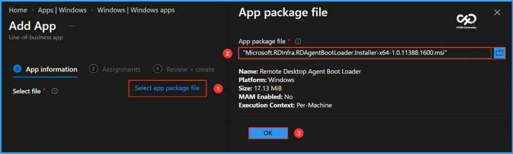
The Remote Desktop Services Infrastructure Agent has now been added as a Windows MSI Line-of-business app. Most required application details populate automatically from the MSI package. Under App Information, specify the Publisher as Microsoft Corporation and select Computer Management as the Category. The remaining fields are optional and can be configured as needed. Once completed, click Next.
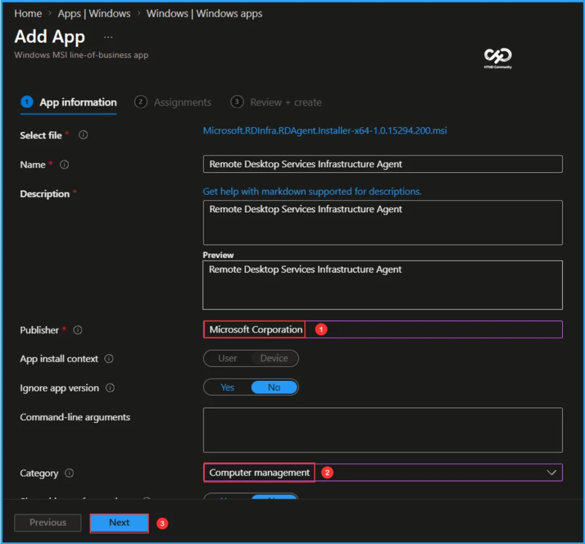
The Remote Desktop Agent Boot Loader has now been added as a Windows MSI Line-of-business app. Most required application details populate automatically from the MSI package. Under App Information, specify the Publisher as Microsoft Corporation and select Computer Management as the Category. The remaining fields are optional and can be configured as needed. Once completed, click Next.
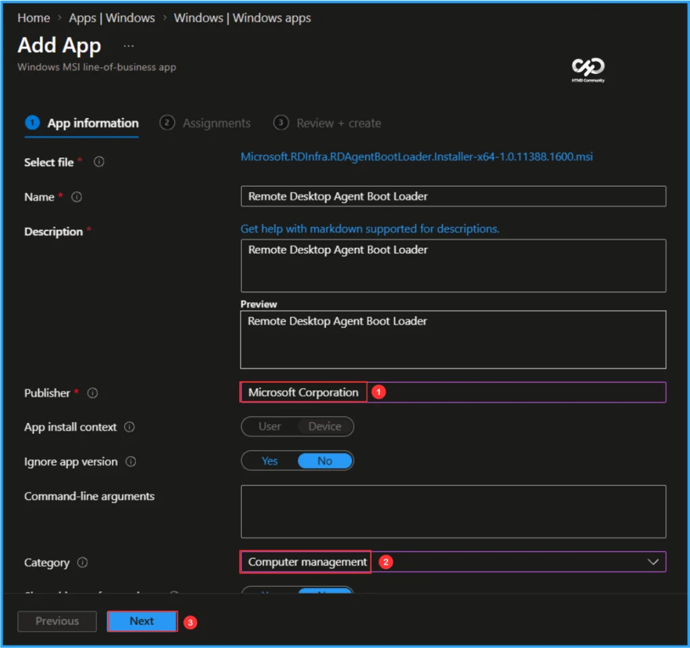
Assign the Line-of-Business (LOB) applications to the Devices – Remote Help Test group. Under the Assignments section, select Required, click Add group, and choose the target device group. Next, edit the Install context setting and configure it as Device Context. Once the assignment is complete, click Next to proceed.
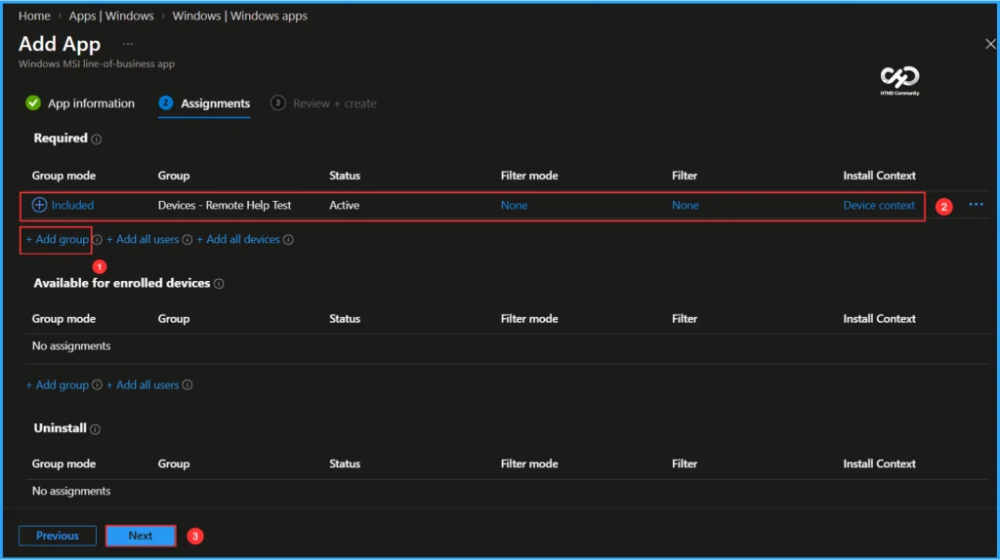
On the Review + create page, carefully review all the settings you’ve defined for the Remote Desktop Services Infrastructure Agent application deployment. Select Create to implement the changes once you’ve confirmed everything is correct.
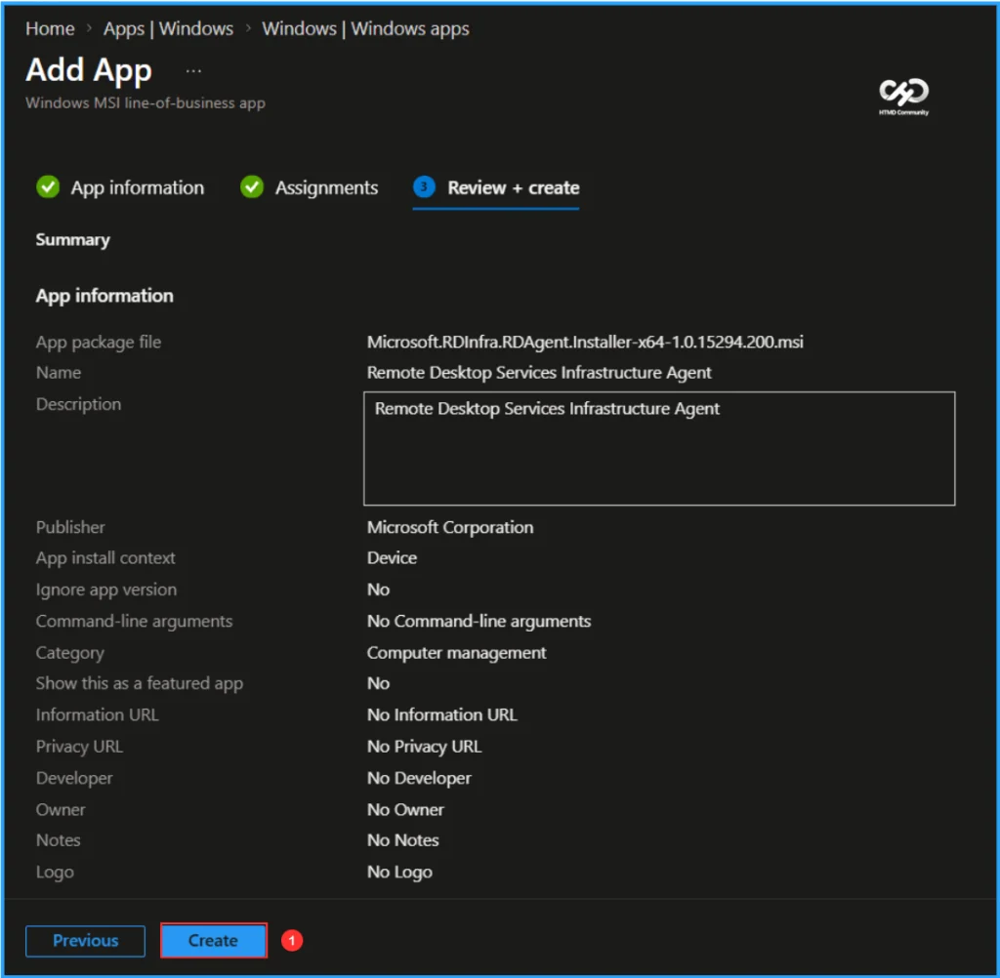
On the Review + create page, carefully review all the settings you’ve defined for the Remote Desktop Agent Boot Loader application deployment. Select Create to implement the changes once you’ve confirmed everything is correct.
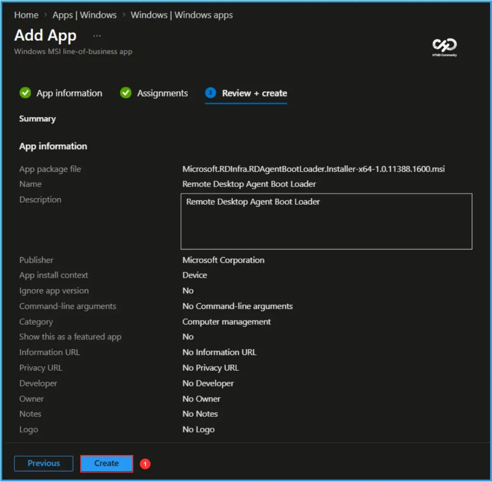
Monitor the Deployment of Remote Desktop Services Infrastructure Agent
This app has been deployed to the Microsoft Entra ID device group. The policy will take effect as soon as the device syncs. To monitor the deployment status from the Intune Portal, follow the steps below.
- Navigate to Apps > Platforms > Windows > Windows apps > Search for the “Remote Desktop Services Infrastructure Agent” LOB App.
- Under the Overview status, you can see the deployment status for both Device & User.
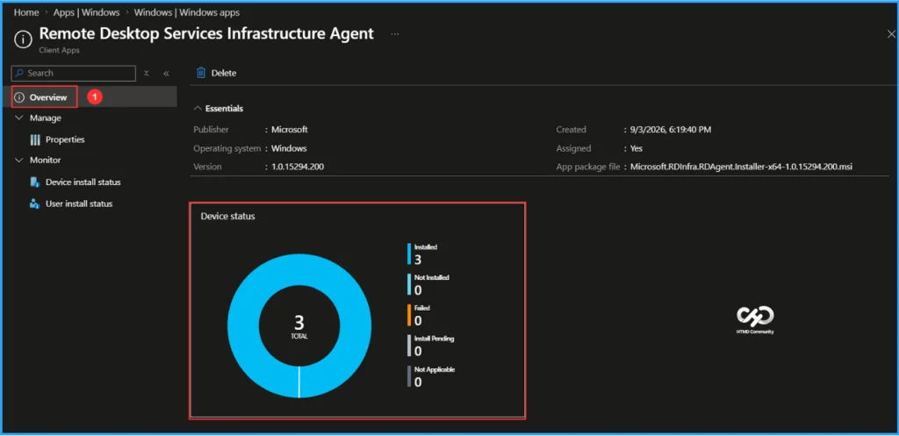
Monitor the Deployment of Remote Desktop Agent Boot Loader
This app has been deployed to the Microsoft Entra ID device group. The policy will take effect as soon as possible once the device is synced. To monitor the deployment status from the Intune Portal, follow the steps below.
- Navigate to Apps > Platforms > Windows > Windows apps > Search for the “Remote Desktop Agent Boot Loader” LOB App.
- Under the Overview status, you can see the deployment status for both Device & User.
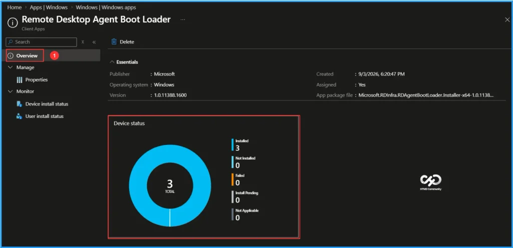
End-User Experience
Verify that the Remote Desktop Services Infrastructure Agent and Remote Desktop Agent Boot Loader applications have been installed successfully. Sign in to one of the targeted devices, open Control Panel, and navigate to Programs > Programs and Features. In the list of installed applications, confirm that both applications are present, indicating a successful installation.
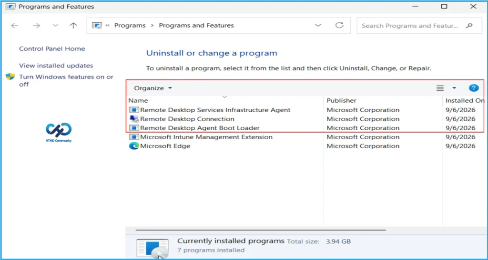
Need Further Assistance or Have Technical Questions?
Join the LinkedIn Page and Telegram group to get the latest step-by-step guides and news updates. Join our Meetup Page to participate in User group meetings. Also, join the WhatsApp Community and the WhatsApp channel to get the latest news on Microsoft Technologies. We are there on Reddit as well.
Author
Vaishnav K has 13 years of experience in SCCM, Intune, Modern Device Management, and Automation Solutions. He writes and shares knowledge about Microsoft Intune, Windows 365, Azure, Entra, PowerShell Scripting, and Automation. Check out his profile on LinkedIn.